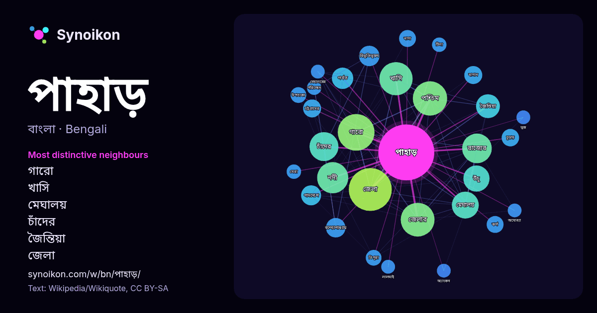

বাংলা · আজকের শব্দের তালিকা
পাহাড়
“mountain” · উইকিপিডিয়া, Wikiquote থেকে 1326টি প্রয়োগে এর চারপাশে পাওয়া শব্দ।

সবচেয়ে স্বতন্ত্র প্রতিবেশী
- গারো 61×
- খাসি 51×
- মেঘালয় 35×
- চাঁদের 35×
- জৈন্তিয়া 29×
- জেলা 22×
- বিভূতিভূষণ 22×
- উঁচু 21×
- পাদদেশে 19×
- পশ্চিম 18×
- বন্দ্যোপাধ্যায় 17×
- পর্বত 17×
- চূড়ায় 15×
- নদী 15×
- নাগা 15×
- ঝর্ণা 14×
- চট্টগ্রামের 13×
- বাগান 13×
- জেলার 12×
- পরিচ্ছেদ 12×
× = সাধারণ উইকিপিডিয়া টেক্সটের চেয়ে কত গুণ বেশি।
সবচেয়ে ঘন ঘন প্রতিবেশী
- অবস্থিত 109
- জেলা 97
- গারো 71
- পশ্চিম 62
- ভারতের 61
- জেলার 60
- খাসি 58
- নদী 51
- পূর্ব 46
- রাজ্যের 46
- চাঁদের 44
- নাম 42
- দক্ষিণ 41
- মেঘালয় 38
- পরিচিত 37
- উঁচু 36
- নামে 35
- সর্বোচ্চ 32
- জৈন্তিয়া 30
- বাংলাদেশের 30
প্রসঙ্গে
- ভূসংস্থানসহ এলাকায় একটি পাহাড় একটি বিশাল শিখর (যেমন বক্স হিল, সারে) ছাড়া সমতল ভূখণ্ডের একটি নির্দিষ্ট বিভাগ উল্লেখ করতে পারে। একটি পাহাড় এবং একটি পর্বত মধ্যে Wikipedia snippets · পাহাড়
- চন্দ্রনাথ পাহাড় হলো চট্টগ্রাম পশ্চিমাঞ্চলীয় হিল রেঞ্জের সর্বোচ্চ চূড়া। চট্টগ্রাম পশ্চিমাঞ্চলীয় হিল রেঞ্জ হিমালয় হতে বিচ্ছিন্ন হিমালয়ের পূর্বাঞ্চলীয় Wikipedia snippets · চন্দ্রনাথ পাহাড়
- জয়চন্ডী পাহাড় হল ভারতের পশ্চিমবঙ্গ রাজ্যের পুরুলিয়া জেলায় অবস্থিত একটি পাহাড় শৃঙ্খলা, এটি বেশ কটি পাহাড় নিয়ে গঠিত। প্রতিটি পাহাড়ের নিজস্ব নাম Wikipedia snippets · জয়চন্ডী পাহাড়
- জয়চণ্ডী পাহাড় রেলওয়ে স্টেশন ভারতীয় রাজ্য পশ্চিমবঙ্গের পুরুলিয়া জেলার জয়চণ্ডী পাহাড় ও রঘুনাথপুরের মধ্যে অবস্থিত। ১৮৮৭ সালে নাগপুর–ছত্তিশগড় রেলপথকে Wikipedia snippets · জয়চণ্ডী পাহাড় রেলওয়ে স্টেশন
- চেরাগী পাহাড় নামে কোন পাহাড়ের অস্তিত্ত্ব না থাকলেও এখানে তিন রাস্তার সংযোগ স্থলে রয়েছে চেরাগ আকৃতির স্থাপনা। এই স্থাপনাই বর্তমানে চেরাগি পাহাড় নামে Wikipedia snippets · চেরাগি পাহাড়
- লালমাই পাহাড় বাংলাদেশের কুমিল্লা জেলার সদর দক্ষিণ উপজেলায় অবস্থিত একটি বিচ্ছিন্ন পর্বতশ্রেণী। প্রায় পঁচিশ লক্ষ বছর আগে প্লাইস্টোসিন যুগে এই পাহাড় গঠিত Wikipedia snippets · লালমাই পাহাড়
- গারো পাহাড় জেলার পরেই দ্বিতীয় জনবসতিপূর্ণ জেলা। ১৯৮৬ সালে পশ্চিম গারো পার্বত্য জেলাতে, তার পার্শ্ববর্তী জেলাগুলি সহ দক্ষিণ এবং পূর্ব গারো পাহাড় জেলায় Wikipedia snippets · পশ্চিম গারো পাহাড় জেলা
- দেয়াঙ পাহাড় (দিয়াং নামেও পরিচিত) বাংলাদেশের চট্টগ্রামের একটি ঐতিহাসিক পাহাড়। এটি চট্টগ্রামের কর্ণফুলী নদীর দক্ষিণ তীরবর্তী বর্তমান আনোয়ারা-কর্ণফুলীর Wikipedia snippets · দেয়াঙ পাহাড়
আরও শব্দ
- অরণ্য
- আয়না
- ইতিহাস
- ঈশ্বর
- কাজ
- কুকুর
- ক্ষমতা
- খাদ্য
- গান
- গ্রীষ্ম
- ঘড়ি
- ঘণ্টা
- ঘোড়া
- ছায়া
- জননী
- জলবায়ু
- জীবন
- ঝড়
- টাকা
- ট্রেন
- দারুচিনি
- দ্বীপ
- নক্ষত্র
- নীরবতা
- পরিবার
- পানি
- প্রকৃতি
- বাগান
- বিজ্ঞান
- বিড়াল
- বৃষ্টি
- ভাষা
- মধু
- মরুভূমি
- মানচিত্র
- মৃত্যু
- রাস্তা
- রুটি
- লবণ
- শরৎ
- শহর
- শিল্প
- শীত
- সত্য
- সময়
- সেতু
- সোনা
- স্বাস্থ্য
- হৃদয়
2026-10-09 তারিখে ডিফল্ট সেটিংসে (±5 শব্দ, মাঝারি কর্পাস) আগে থেকে গণনা করা। ইন্টারঅ্যাক্টিভ মানচিত্র লাইভ ডেটা দিয়ে এটি হালনাগাদ করতে পারে।
যন্ত্রে অনূদিত ইন্টারফেস; সংশোধন স্বাগত।